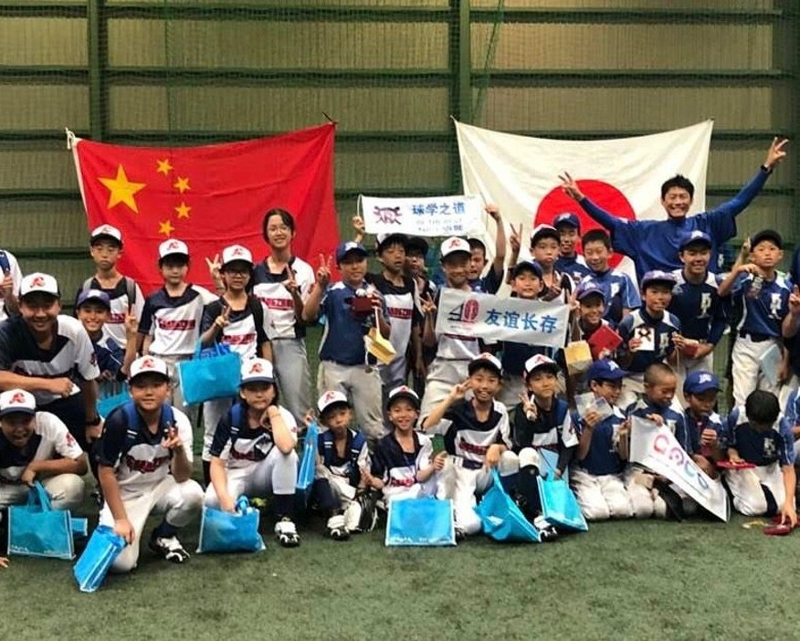
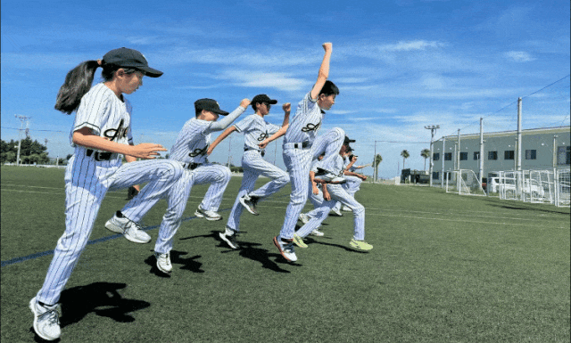
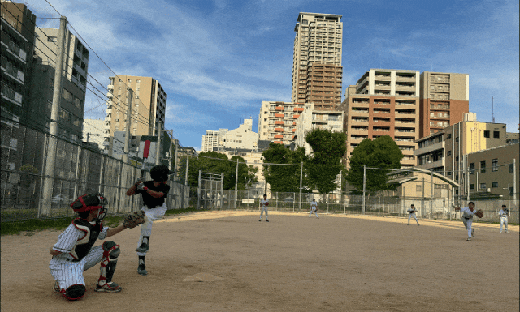
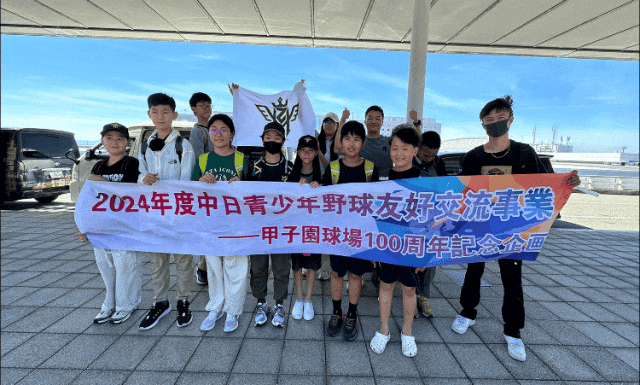
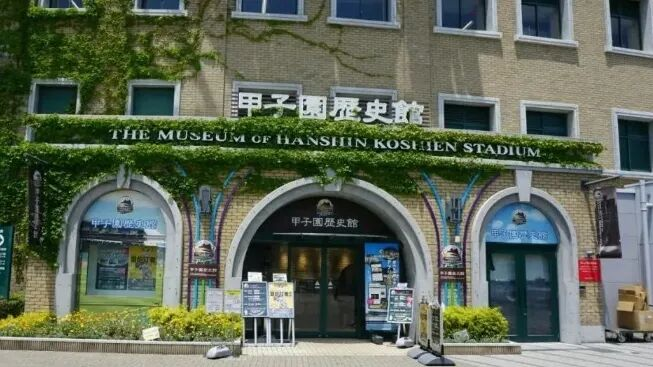
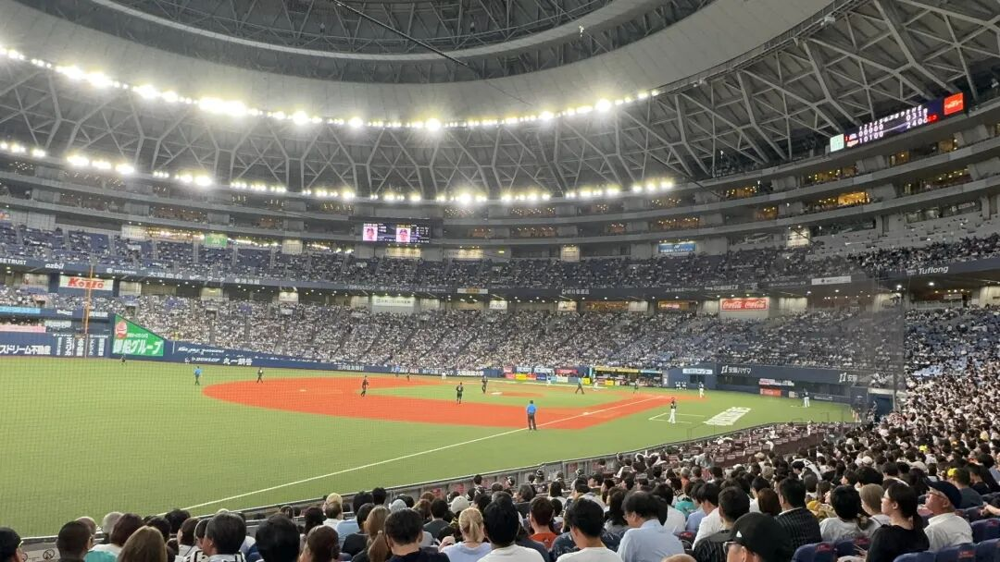

這不僅僅是一趟旅程，這是少年小將們跨越國界，
用汗水與棒球書寫的青春紀念冊。
2024 年暑假，一場橫跨海洋的「中日青少年野球友好交流事業」熱血展開。活動的核心在於讓孩子們親身體驗世界級的棒球文化，透過異國合訓與實戰，學習團隊間的尊重與不輕言放棄的精神。這場企劃為少年們開拓了更廣闊的視野，在紅土場上留下了最純粹的汗水與笑容。
從清晨整齊劃一的揮棒練習，到踏上舉世聞名的聖地球場，每一刻的交流都是成長路上最精彩的篇章。

▲ 2024年度中日青少年野球友好交流事業 —— 捕捉熱血瞬間
在異國的球場上，感受專業的訓練節奏，與當地隊伍切磋日式野球靈魂。

藍天白雲下，展現出高度的鬥志與整齊劃一的動作要求。

接受精細的打擊指導，在實戰中磨練技巧，每一棒都充滿力量。

在充滿生活氣息的市區球場，與當地少年進行一場熱血的友誼對決。
踏上少年們的終極夢想地，見證百年歷史的沉澱。


親臨萬人巨蛋，感受職業賽事與頂級高校對決的沸騰氣氛。
在職業級的場館中，孩子們親眼見證了最高水準的棒球文化。從觀眾席的加油聲到場上的每一個守備細節，這份震撼將轉化為他們前進的動力。